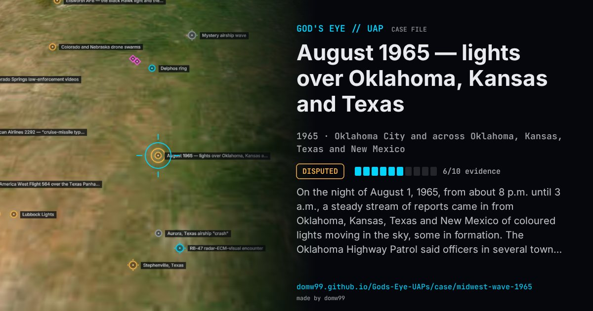

August 1965 — lights over Oklahoma, Kansas and Texas

On the night of August 1, 1965, from about 8 p.m. until 3 a.m., a steady stream of reports came in from Oklahoma, Kansas, Texas and New Mexico of coloured lights moving in the sky, some in formation. The Oklahoma Highway Patrol said officers in several towns had seen them and that Tinker Air Force Base had as many as four on radar at once at about 22,000 ft. Tinker would neither confirm nor deny the radar contacts, and its approach-control radar reported none during the height of the local sightings. The reports continued for several nights, and Blue Book received dozens from the region. The Air Force answered first that people were seeing the Delta Aquarid meteors, then that they were seeing bright stars and planets, which led to public objections from planetarium staff that the planets named were not in view.
Explanation
The Air Force first suggested a meteor shower, then said the lights were stars and planets made to change colour by scintillation, naming Jupiter among them. Planetarium directors in Oklahoma objected that Jupiter was not in the evening sky at that season; one suggested Antares or Vega. The reported radar contacts were never confirmed: a Tinker AFB spokesman would neither confirm nor deny them, and the base’s approach-control radar reported no contacts at the peak.
What was seen
Shape: Coloured lights, red, white and blue-green, reported hovering and moving
Witnesses: Oklahoma Highway Patrol and police officers, weather observers and thousands of residents
Duration: From about 8 p.m. to 3 a.m., and again the following nights
Sources
- Oklahoma Journal, August 2, 1965 (transcribed)
- Oklahoma City Times, August 3, 1965 (transcribed)
- Daily Oklahoman, August 4, 1965 (transcribed)
Browse
- United States
- 1960s
- Disputed
- Mass sightings
- Official government documents
- Many independent witnesses
- Radar tracking
- Police witnesses
- Lights and fireballs